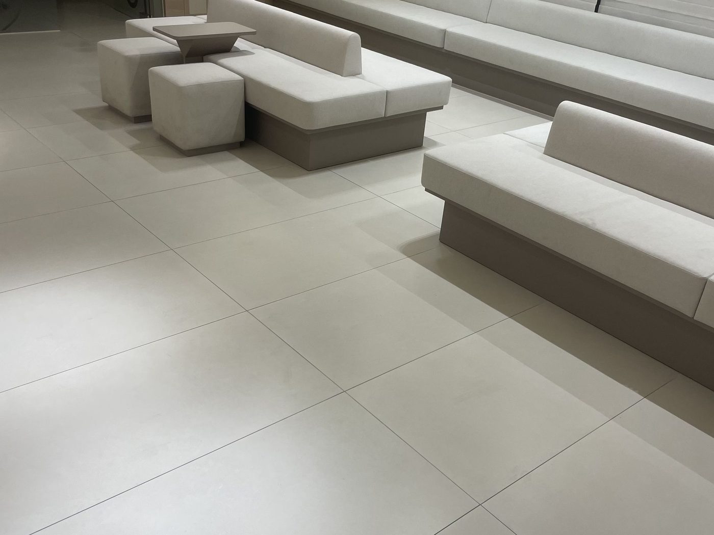
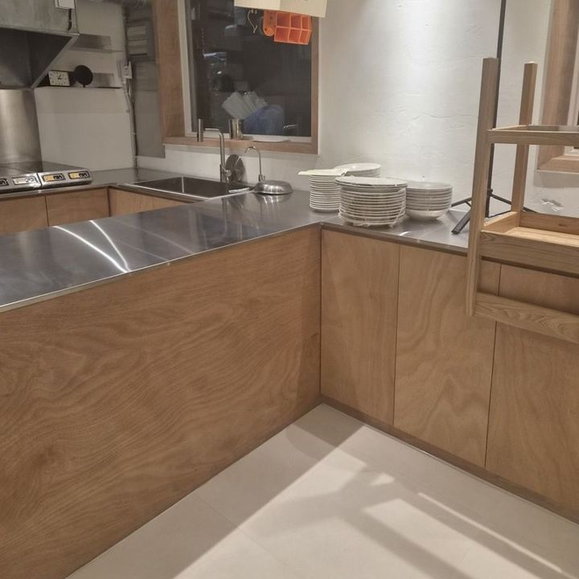
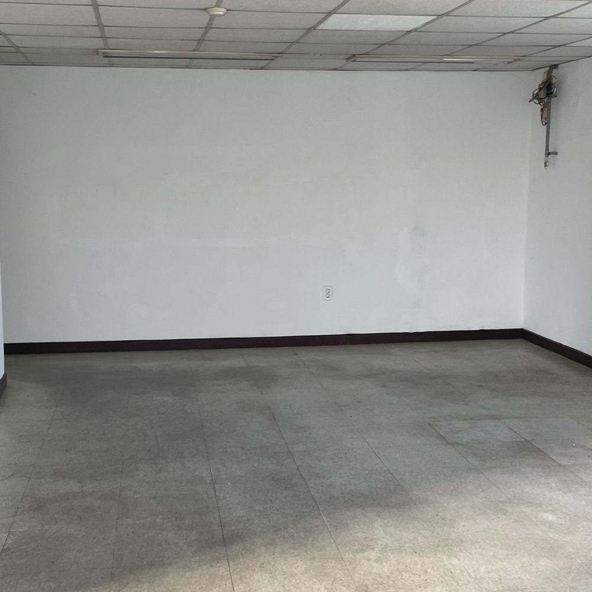
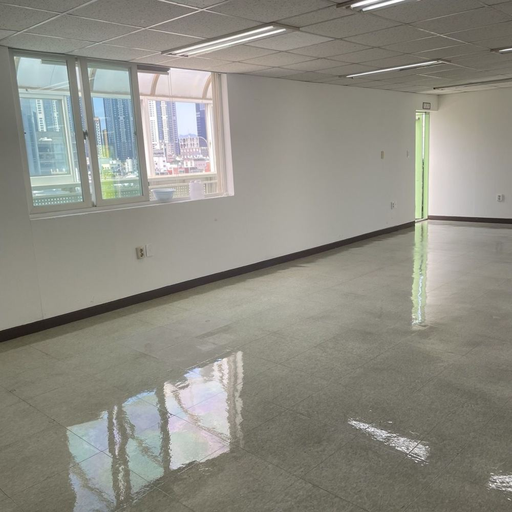

정기청소
주 1회부터 매일까지 공간에 맞춰 주기를 정해요. 같은 팀이 같은 순서로 관리해서 날마다 상태가 고르게 유지됩니다.
- 병원·한의원
- 사무실
- 상가·매장
- 건물 공용부

Space Needs A Standard.
성수동 · 성동구 · 광진구 · 서울 전역 | 사무실 · 팝업/쇼룸 · 상가 · 병원
여러분의 시간은 청소보다 소중합니다.
깨끗한 공간은, 전화 한 통이면 충분합니다.
전화 문의 0507-1345-9649전화 걸기


주 1회부터 매일까지 공간에 맞춰 주기를 정해요. 같은 팀이 같은 순서로 관리해서 날마다 상태가 고르게 유지됩니다.
바닥을 새로 깔지 않고 박리, 세척, 코팅, 광택 순서로 하루 만에 살려요. 바닥재와 통행량을 보고 재코팅 주기까지 안내합니다.
공사 끝난 현장, 오래 묵은 공간, 높은 곳 작업까지 일정에 맞춰 투입합니다.


BEFOREAFTER가운데 손잡이를 좌우로 끌어보세요
탁하게 죽어 있던 쇼룸 바닥을 연마기로 갈아내고 코팅을 올려 하루 만에 광택을 되살렸어요.
이 현장 작업 과정 보기무료예요. 현장을 직접 보고 작업 범위와 방법을 제안한 뒤 금액을 안내해요.
광진구 중곡동 NEAT 사무실을 거점으로 성수동·성동구·광진구를 비롯한 서울 전역에 방문해요.
주 1회부터 매일까지 공간에 맞춰 정해요. 지금 관리하는 현장은 사무실 주 1회, 이비인후과 주 2회, 교회 주 3일, 내과·한의원 주 6회예요. 같은 팀이 같은 순서로 관리해요.
네. 영업 전후, 야간, 주말 등 공간 일정에 맞춰 작업해요.
공사가 전부 끝난 걸 확인하고, 집기와 가구가 들어오기 전에 잡는 게 가장 수월해요. 새로 쏜 실리콘은 하루 정도 굳힌 뒤 물청소를 해요.
바닥 상태에 따라 작업 방법이 달라져서 방문 견적 때 먼저 확인해요. 기존 코팅이 남아 있고 겉만 탁해졌다면 연마기로 윗층만 갈아내고 바로 새 코팅을 올려 비교적 빨리 끝나요. 얼룩이 코팅 속까지 배었거나 덧칠이 두꺼워져 누렇게 떴다면 묵은 왁스를 전부 벗겨내는 박리부터 해서 시간이 더 걸려요. 어느 쪽이든 헹굼 뒤 완전히 말리고, 왁스를 얇게 여러 겹 한 겹씩 말려가며 올려요. 대부분 하루 안에 마치고, 성수동 쇼룸은 2명이 5시간 정도 걸렸어요. 코팅 후 하루 정도 여유를 두고 집기를 들이면 안전해요.
네, 세금계산서 발행돼요.
없어요. 최소 계약 기간 없이 시작할 수 있어요.
지금 관리하는 사무실과 병원 현장은 분리수거까지 함께 맡고 있어요. 범위는 방문 견적 때 함께 정해요.
방문 견적은 무료입니다. 성수동·성동구·광진구를 비롯한 서울 전역에 방문하며, 서울 광진구 긴고랑로15길 14, 1층(중곡역 인근) NEAT 사무실에서도 상담하실 수 있습니다.